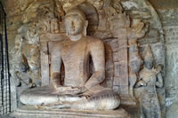
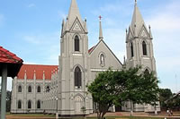

Tôn giáo tại Sri Lanka
Người dân Sri Lanka là các tín đồ của nhiều tôn giáo khác nhau. 70.19% người dân Sri Lanka theo Phật giáo Thượng tọa bộ, 12.6% theo Ấn Độ giáo, 9.7% là người Hồi giáo (chủ yếu thuộc nhóm Hồi giáo Sunni) và 7.4% là tín đồ Kitô.
Sri Lanka là một quốc gia sùng đạo với 99% dân số cho rằng tôn giáo là một phần quan trọng trong cuộc sống hằng ngày của họ.
Phật giáo
Phật giáo Thượng tọa bộ là một tôn giáo lớn tại Sri Lanka, với khoảng 70% dân số cả nước là tín đồ của đạo. Khoảng năm 200 TCN, Phật giáo trở thành một tôn giáo chính thức của Sri Lanka. Sri Lanka là đất nước có lịch sử Phật giáo duy trì lâu dài nhất, hơn hết bất kỳ một đất nước Phật giáo nào.
Ấn Độ giáo
Các tín đồ theo Ấn Độ giáo chiếm 12.6% dân số Sri Lanka. Nguồn gốc tôn giáo liên quan đến việc người Tamil di cư vào hòn đảo kể từ sau thế kỷ thứ 10, hoặc có thể trước đó nữa. Ấn Độ giáo ở Sri Lanka phần lớn có các tín đồ là người Tamil tập trung ở phía Bắc, phía Đông và các tỉnh miền Trung.
Hồi giáo
Vào thế kỷ thứ 16, những thương nhân người Ả Rập đã kiểm soát hầu hết các hoạt động thương mại buôn bán của vùng Ấn Độ Dương, bao gồm cả của Sri Lanka. Nhiều người trong số những thương nhân định cư ở Sri Lanka, đã phổ biến và mang Hồi giáo đến đây.
Kitô giáo
Theo truyền thống Kitô giáo, Kitô giáo lần đầu tiên được phổ biến tại Sri Lanka (cũng như Ấn Độ) bởi Tôma Tông đồ vào thế kỷ thứ 1. Sau khi Tôma đến đây, có những ghi nhận rằng một số nhóm nhỏ các tín đồ Kitô đã định cư dọc theo bờ biển Sri Lanka. Những nhà truyền giáo thuộc Anh giáo và các nhánh đạo Tin Lành khác đặt chân đến Sri Lanka vào đầu thế kỷ 19.